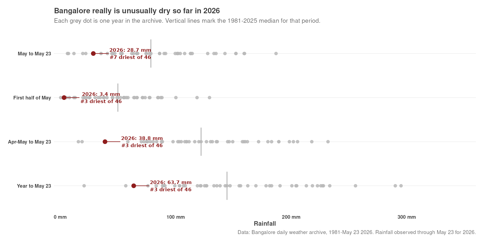
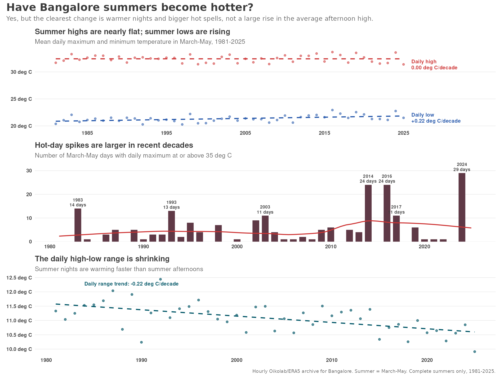

Bangalore is dry. That does not make early May a monsoon oracle.
2026 is genuinely dry so far, but first-half May rain has almost no local relationship with June-September rain.

Pre-monsoon rain is an evening creature
April-May rain barely exists before afternoon, then climbs hard into the 5-6pm slot.

The wind has a cleaner seasonal story than I expected
The city flips from winter easterlies to monsoon westerlies in a surprisingly readable way.

Bangalore summers are getting hotter, but mostly at night
The clearest change is warmer nights, not a big rise in the average afternoon high.

Do summer showers actually cool Bangalore?
Rainy afternoons start cooler, end cooler, and still show a proper post-rain drop.